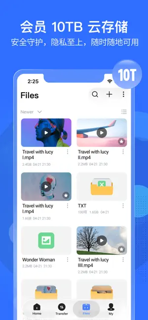

磁力云下载工具横向看，PikPak 在这个位置
用过四五款同类服务后，聊聊 PikPak 的秒存机制、云端中转和播放体验在同行里到底排第几，适合谁、不适合谁。
磁力云下载这个类目，过去两三年里冒出来好几家。有的靠做种节点多吃饭，有的主打便宜配额，还有的干脆把自己包装成网盘来卖。真正让我留下来长期用的，只有 PikPak 官网 这一家——不是说它没有短板，而是它在几个我最在意的点上做得明显比别家省心。
同类工具的格局
先给新人一个坐标系：磁力云下载本质上分两类。第一类是 Seedbox 思路——给你一台远程服务器，你自己在上面跑 qBittorrent 或 Transmission，下载完再 FTP 回本地。这类灵活度高，但维护成本也高，适合折腾党。第二类就是 PikPak 代表的"托管式云盘"思路——你不用管服务器，把磁力或种子丢进去，云端搞定一切，完成后直接在线播放或取回本地。后者对普通用户友好得多，但各家在缓存命中率、播放流畅度、隐私保护上的差距挺大。
PikPak 站稳脚跟靠的不是第一个做托管式云盘，而是把"热门资源秒存"这件事做成了招牌宣传，而且实际体验确实跟得上。这点很多同行也在抄，但抄到位的没几家。
差异化一：秒存不是噱头
从 PikPak 下载 装好应用试过一段时间，"磁力秒存"这四个字被吹烂了，但 PikPak 的实现逻辑真的不一样。热门资源提交之后，云端服务器核对哈希，如果已经有其他用户下过这个文件、分块就在服务商的存储集群里，直接把现成副本挂到你名下——不是去 P2P 网络下载，是云端内部搬运，所以几秒完成真的不是吹牛。
对比下来，别家要么根本没有全局缓存池，要么缓存命中率低到"偶尔秒一次"。PikPak 的优势在于用户基数够大，热门影视、常用软件、流行合集这几个品类的缓存命中已经接近常态。我自己测过，一部正在更新的热门剧集，磁力链接粘进去三秒就入库了——同时用另一家服务跑同样的链接，等了八分钟才开始真正下载。
当然也要说清楚：冷门资源没缓存的话，PikPak 也是老老实实连做种节点，速度取决于做种数量，可能很慢甚至超时。这不是它"变慢了"，是机制决定的。反复重提交不会加速，这点跟所有云下载服务一样，详细原理和排查步骤在 pikpak文档 里有说明。
差异化二：云端中转的隐私和带宽解放
传统下载是"别人的电脑直连你的电脑"——P2P 网络里大量对端节点能看到你家的宽带 IP，运营商也清楚你在传什么。云下载把整个流程搬到服务商的服务器上，对端看到的只有云服务商的 IP 段，跟你的个人网络彻底隔离。这不是什么"灰色地带"的偷梁换柱，是从架构层面换了参与方。
带宽解放也是实打实的好处。大体积任务交给云端跑，你家的上传下载带宽不会被吃满——睡前丢一个几十 GB 的任务，该开会开会该刷网页刷网页，醒来已经入库了。Seedbox 思路的方案虽然也能做到这一点，但需要自己维护服务器，对普通用户来说门槛差了一个量级。
差异化三：播放器内建了完整的追剧体验
很多人把云下载和播放器割开看——下载归下载，播放用本地播放器接回来。PikPak 的思路是下载完直接在线看，而且播放器本身做得挺用心：移动端支持 0.5 到 2.0 倍速调节，双指捏合缩放画面，进度拖动即拖即播不用缓冲整段，剧集自动按文件夹组织成集数在播放器内上下切换。
这点被低估了。同类服务里很多要么只做下载不做播放，要么播放器是个残废——倍速只有固定几档，没有手势，剧集识别得乱七八糟。PikPak 把播放器当成核心功能来做，用户不用下载到本地再折腾播放器，对追剧党来说体验顺滑了不止一星半点。

它的取舍：为优势付出了什么
说了三个好的，得说不好的，不然就成软文了。
首先是配额和价格。云端下载不是无限资源，每个月有传输配额，速度跟会员档位直接挂钩。免费档的配额够偶尔用一次，重度用户得掏钱。而且它不做种——官方明说这不是 Seedbox，适合收藏观看不适合资源分发。如果你是那种需要长期挂做种的用户，PikPak 从设计上就不是为你准备的。
其次是平台限制。PC 客户端的播放器跟移动端不是同一套，功能有差异，快捷键体系也独立。网页版偶尔会出现某些格式的视频播不了，需要转到 App 端。多端同步做得还行，但切换体验谈不上无缝。
最后，云盘存储本身也有限额。热门资源秒存的代价是占用你自己的云盘空间，如果收藏的东西多了，存储空间可能先用完而不是传输配额用完。这点很多用户刚开始没注意到，存了几个大合集才发现空间告警。
选购结论：谁该选它，谁该选别的
如果你是普通用户，想安安静静地"丢个磁力、等一下、在线看"，不想折腾服务器、不想维护 qBittorrent、不想研究端口映射——PikPak 几乎是这个类目下最省心的选择。它的秒存机制、云端中转、内建播放器三件事组合起来，把"磁力下载"这件事从技术活变成了纯消费行为。
但如果你有以下需求，那你应该去看别家或别的路线：需要高频做种贡献流量的，找 Seedbox 或本地客户端；预算紧到连会员都嫌贵的，可能得接受低命中率或去用更便宜但体验打折的方案；有大量冷门 0 做种资源需要解析的，PikPak 在这类任务上跟同行没本质区别，纯粹靠运气。
总结一句话：PikPak 不是最强的磁力下载工具，但它是把"托管式云盘"这条路线走得最稳的一家。
这套资料在文档仓库里同步维护着，GitHub、Gitee 和 GitCode 三个仓库都能拿到，国内访问或本地备份选哪个都行。